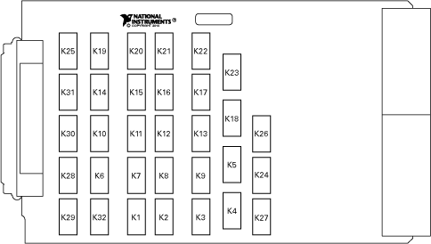
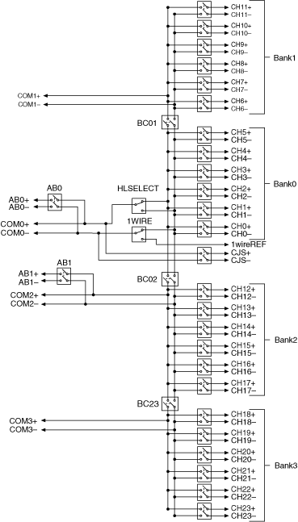

NI PXI-2503 Relay Replacement
The NI PXI-2503 uses electromechanical armature relays.
Refer to the following table for information about ordering replacement relays.
| Relay Manufacturer |
Part Number |
| NEC-TOKIN |
EF2-4.5NUX-L6 |
| Relay Kit |
Part Number |
| M3 Distribution (10 relays) |
197488A-01 |
Complete the following steps to replace a failed relay.
- Ground yourself using a grounding strap or a ground connected to your PXI chassis.
 |
Note Properly grounding yourself prevents damage to your module from electrostatic discharge. |
- Refer to the following figures and table to locate the relay you want to replace.
NI PXI-2503

NI PXI-2503 Hardware Diagram

| Relay Name |
Reference Designator |
| CH0 |
K32 |
| CH1 |
K1 |
| CH2 |
K2 |
| CH3 |
K3 |
| CH4 |
K4 |
| CH5 |
K5 |
| CH6 |
K6 |
| CH7 |
K7 |
| CH8 |
K8 |
| CH9 |
K9 |
| CH10 |
K10 |
| CH11 |
K11 |
| CH12 |
K12 |
| k13 |
K12 |
| CH13 |
K13 |
| CH14 |
K14 |
| CH15 |
K15 |
| CH16 |
K16 |
| CH17 |
K17 |
| CH18 |
K18 |
| CH19 |
K19 |
| CH20 |
K20 |
| CH21 |
K21 |
| CH22 |
K22 |
| CH23 |
K23 |
| BC01 |
K24 |
| BC23 |
K25 |
| BC02 |
K26 |
| CJTEMP |
K27 |
| 1WIRE |
K28 |
| HLSEL |
K29 |
| AB0 |
K30 |
| AB2 |
K31 |
- Locate the assembly and serial number labels on the board with the relay you want to replace. White labels indicate the board was assembled using lead solder (Sn 63 Pb 37). Green labels indicate the board was assembled using lead-free solder (Sn 96.5 Ag 3.0 Cu 0.5). Lead-free assemblies have assembly numbers ending in L. The different label types are shown in the following figure.

|
Note NI recommends using lead-free solder for relay replacement on lead-free assemblies, and lead solder for relay replacement on lead assemblies. |
 |
Caution Do not rework lead assemblies using a lead-free work station. Lead solder from the unit could contaminate the station. |
|
Caution If a lead-free assembly is reworked with lead solder, label the assembly to indicate this condition. This rework can prevent the same unit from being reworked later on a lead-free solder station, because it could contaminate the station. |
Make sure you have the following items:
- Temperature-regulated soldering iron set to 316 °C (600 °F) for lead solder rework or 371 °C (700 °F) for lead-free solder rework
- 63/37 Tin/Lead solder (flux core) for lead solder rework
- 96.5/3.0/0.5 Tin/Silver/Copper solder (flux core) for lead-free solder rework
- Solder wick
- Isopropyl alcohol
- Cotton swabs
Replace the relay as you would any other through-hole part.
 |
Tip In NI-SWITCH 3.1 or later, you can use the Switch Soft Front Panel to reset the relay count after you have replaced a failed relay. Refer to the Switch Soft Front Panel Help for more information. |